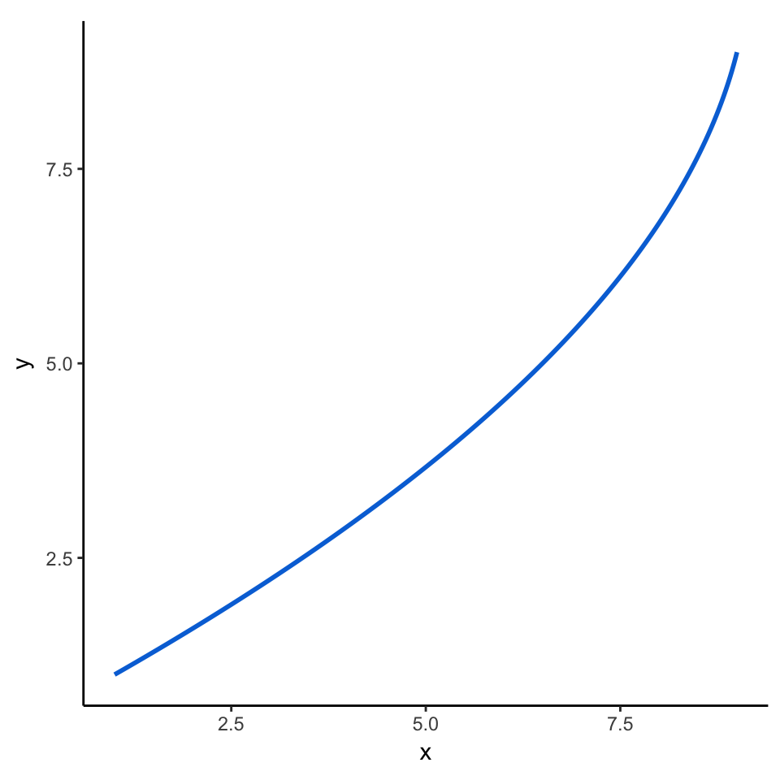
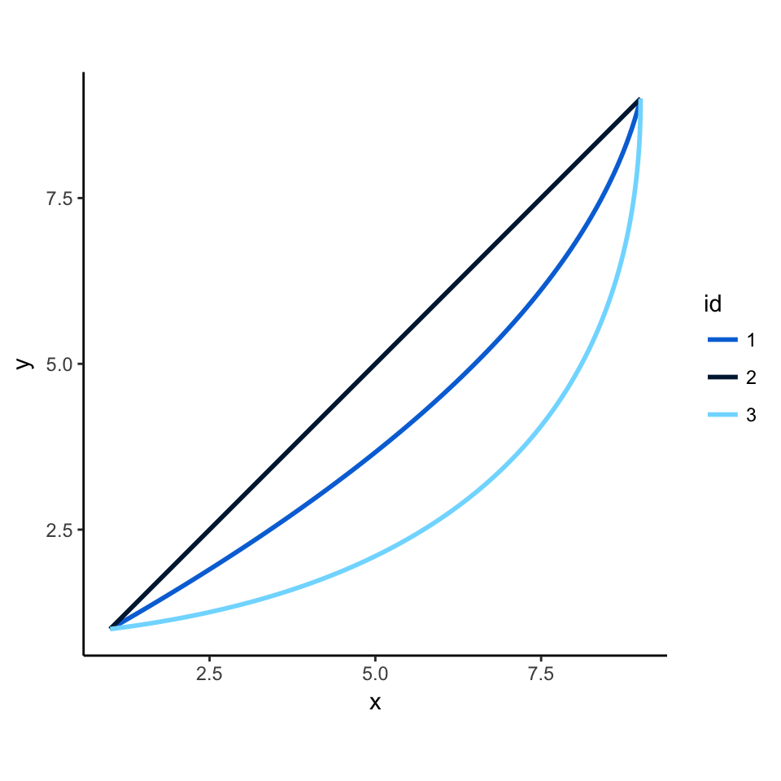
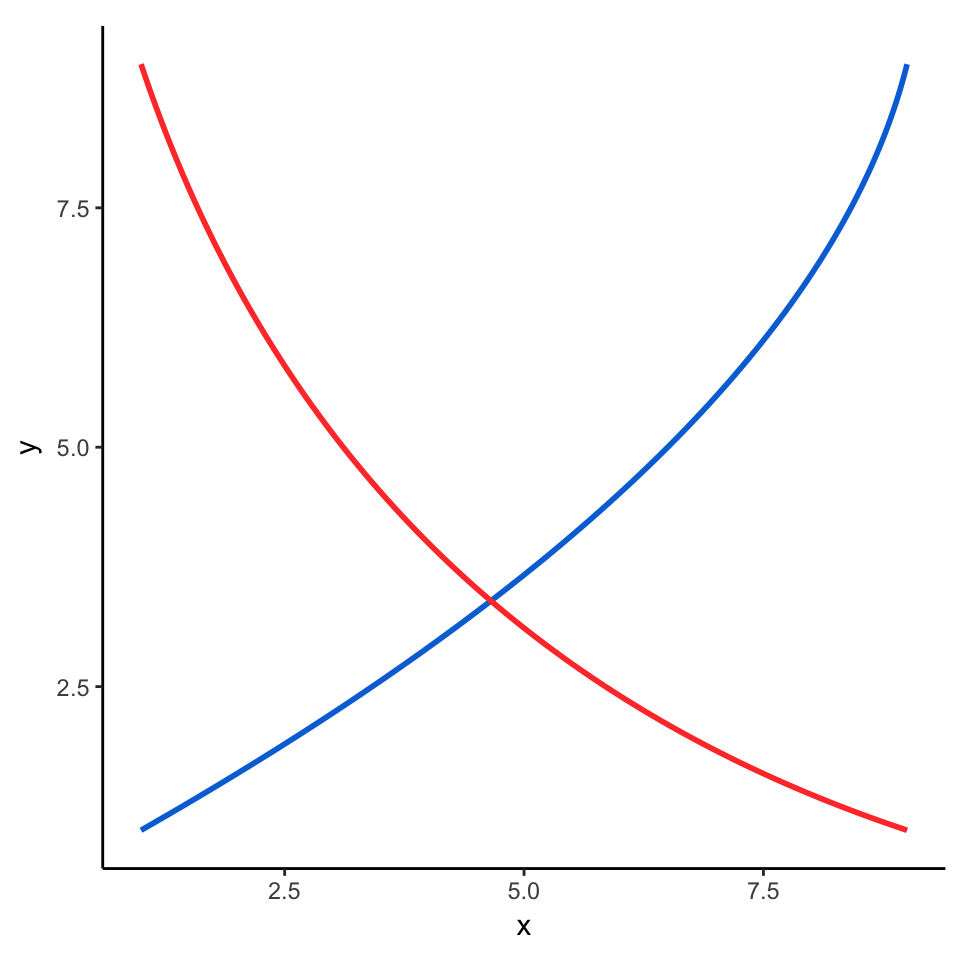
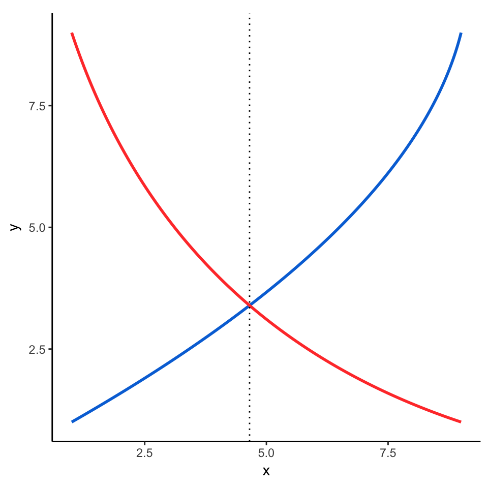
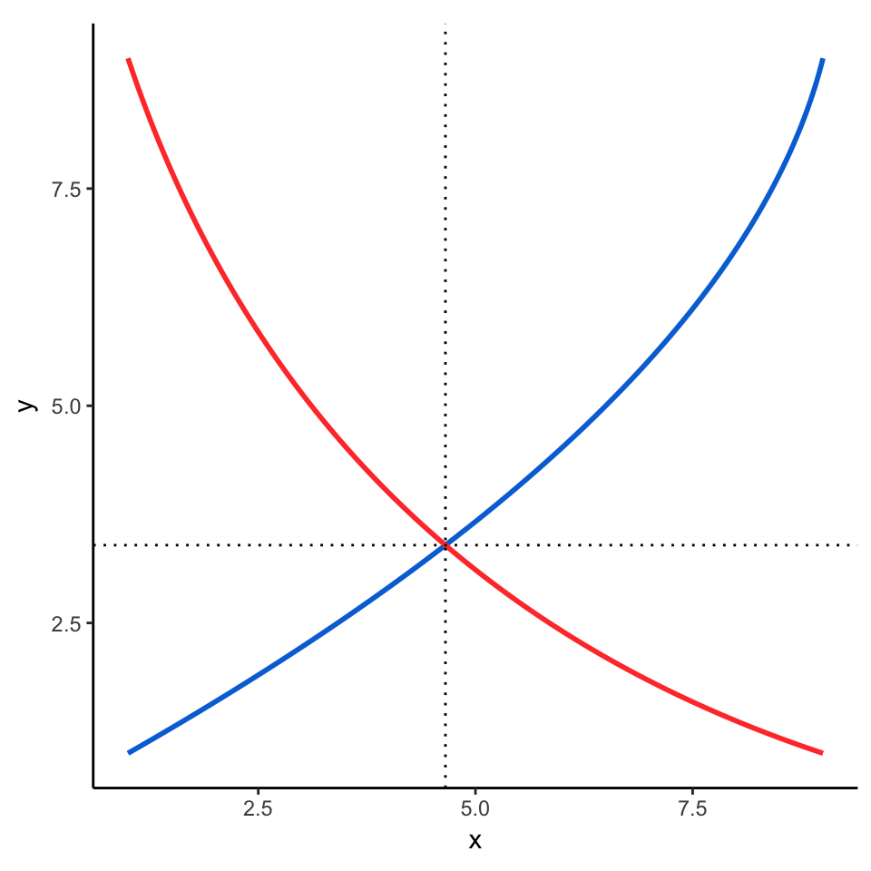
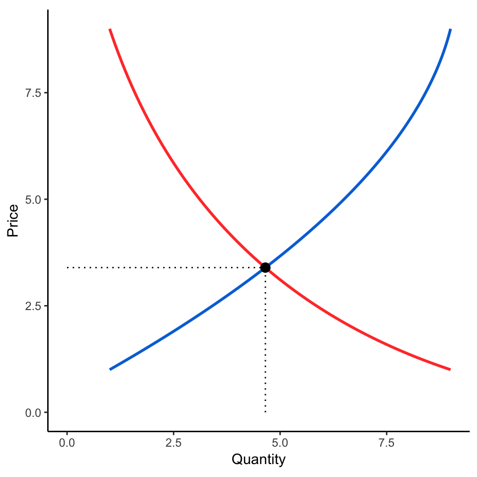
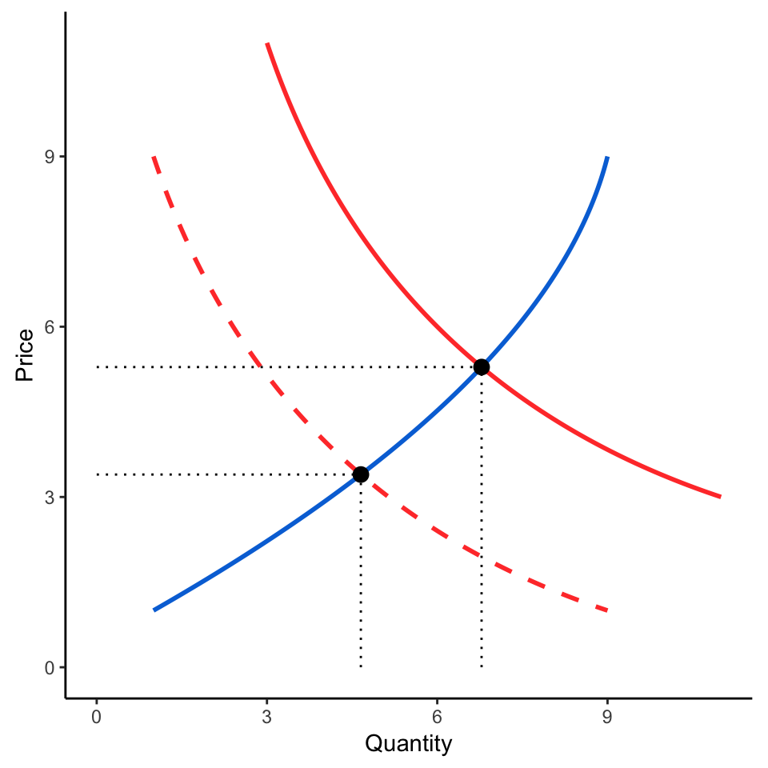

![]()
This is now an R package named reconPlots.
(Skip to the tl;dr complete example; see this mini project on GitHub)
So far, teaching at BYU has been delightful. I’ve been using static course-specific websites for the two classes I’m teaching this semester—data visualization and telling stories with data—and it’s been fantastic. Everything is self-contained and automated and magic and I’m a huge fan of blogdown.
I’m teaching basic microeconomics for public managers next semester. Economics is full of graphs, with supply curves, demand curves, intersections, lines, and shaded areas galore. However, these graphics are rarely connected to real data—they’re conceptual—which makes them a little harder to plot with statistical graphics packages.
In the econ classes I took at BYU and Duke, I either drew problem set graphs by hand on paper or by hand in Illustrator, which was tedious and not very automatable. Since I’m hoping to create another course-specific website with blogdown, I headed out to find an R-based solution for creating conceptual, non-data-based graphs.
After an initial call out on Twitter and searches on Google, I found that the cool kids in econ either use OmniGraffle or Illustrator (which requires manual labor) or tikz to create their graphs. R Markdown and knitr support raw tikz chunks, but only in LaTeX/PDF output (which makes sense, since tikz is essentially TeX). There’s a hacky workaround to get tikz graphics in HTML output, but it looks horrible. Beyond these issues, I didn’t want to learn yet another scripting language, so it was back to looking for R-only solutions.
To my delight, I came across this post from is.R() from 2012 where David Sparks essentially did exactly what I want to do—use ggplot to create conceptual non-data-based graphs. I borrowed extensively from David’s original code and updated his system for my own graphs.
There are a couple key functions that make this work. First is bezier() from the Hmisc package, which generates a Bézier curve from a set of coordinates. Importantly, though, we don’t need to actually load the Hmisc package, since we only need Hmisc::bezier(). Loading the whole package muddies up the environment—in particular Hmisc::summarize() conflicts with dplyr::summarize() and can cause problems later.
First, we can create a supply curve:
supply <- Hmisc::bezier(x = c(1, 8, 9),
y = c(1, 5, 9)) %>%
as_data_frame()
ggplot(supply, aes(x = x, y = y)) +
geom_path(color = "#0073D9", size = 1) +
theme_classic() +
coord_equal()
We can adjust the curviness of the curve by moving the x and y coordinates around. For instance:
supply1 <- Hmisc::bezier(x = c(1, 5, 9),
y = c(1, 5, 9)) %>%
as_data_frame()
supply2 <- Hmisc::bezier(x = c(1, 9, 9),
y = c(1, 2, 9)) %>%
as_data_frame()
all_supply_curves <- bind_rows(supply, supply1, supply2, .id = "id")
ggplot(all_supply_curves, aes(x = x, y = y, colour = id)) +
geom_path(size = 1) +
scale_color_manual(values = c("#0073D9", "#001F40", "#80DBFF")) +
theme_classic() +
coord_equal()
We can make a downward-sloping demand curve the same way. Since we’re using two geom_path() layers here, we remove the data parameter to the main ggplot() function, but keep the aesthetic mapping.
demand <- Hmisc::bezier(c(1, 3, 9),
c(9, 3, 1)) %>%
as_data_frame()
ggplot(mapping = aes(x = x, y = y)) +
geom_path(data = supply, color = "#0073D9", size = 1) +
geom_path(data = demand, color = "#FF4036", size = 1) +
theme_classic() +
coord_equal()
The second key function for plotting these supply and demand graphs is a combination of approxfun() and uniroot(), which we use to find the intersection of the two curves. In his original post, Sparks created an approxIntersection() function to figure out intersections with brute force (i.e. create curves with hundreds of points and then look along the points to find where the coordinates are closest). In his post, he notes:
This probably doesn’t work well in a lot of cases, and I would be interested in hearing of anyone’s less hacky solutions.
So I wanted to try to find a less hacky solution. In this old e-mail to r-help about finding the intersection of two lines, it was suggested that:
With linear interpolation,
uniroot()on the difference between the twoapproxfun()s should get you there [the intersection of two curves] rather quickly.
I’ve used R for years and I’d never heard of either of those functions. But I figured I’d give it a try.
approxfun() takes a matrix of data and approximates a function to fit that data. For example, we can generate a function for the supply curve and then plug in any x value to calculate the corresponding y. Here are the y values for 2, 6, and 8 (they should match the graphs above):
# I honestly have no idea why rule = 2, but things break when rule = 1, so ¯\_(ツ)_/¯
fun_supply <- approxfun(supply$x, supply$y, rule = 2)
fun_supply(c(2, 6, 8))
## [1] 1.590161 4.521605 6.805785Magic.
The uniroot() function can take a function and search across an interval for the root of that function (or, in this case, where two functions intersect). As said in the r-help post, we want to the root of the difference of the supply and demand curves. uniroot only accepts a single function, so we create an anonymous function where we calculate the difference between the two (function(x) fun_supply(x) - fun_demand(x)). We also want to search along the whole range of x, which currently goes from 1 to 9:
fun_demand <- approxfun(demand$x, demand$y, rule = 2)
intersection_funs <- uniroot(function(x) fun_supply(x) - fun_demand(x), c(1, 9))
intersection_funs
## $root
## [1] 4.654098
##
## $f.root
## [1] 0.000002875289
##
## $iter
## [1] 5
##
## $init.it
## [1] NA
##
## $estim.prec
## [1] 0.00006103516This gives a lot of output, but we only really care about the $root value, which is 4.654. And sure enough, it calculated the correct intersection!
ggplot(mapping = aes(x = x, y = y)) +
geom_path(data = supply, color = "#0073D9", size = 1) +
geom_path(data = demand, color = "#FF4036", size = 1) +
geom_vline(xintercept = intersection_funs$root, linetype = "dotted") +
theme_classic() +
coord_equal()
To get the horizontal intersection, we just have to find where the vertical intersection (4.654) shows up in the demand function. We calculate this by plugging the intersection into fun_demand():
y_root <- fun_demand(intersection_funs$root)
ggplot(mapping = aes(x = x, y = y)) +
geom_path(data = supply, color = "#0073D9", size = 1) +
geom_path(data = demand, color = "#FF4036", size = 1) +
geom_vline(xintercept = intersection_funs$root, linetype = "dotted") +
geom_hline(yintercept = y_root, linetype = "dotted") +
theme_classic() +
coord_equal()
Finding the intersections involves a lot of code, so we can put it all in a single function to make life easier later. This function only works on one intersection—it’ll find the first intersection in the full range of the first curve. Finding multiple intersections requires more complicated logic, but since I’m not planning on plotting anything more complicated, I’m fine with this.
# curve1 and curve2 should be data.frames with an x and y column
# For instance, as_data_frame(Hmisc::bezier(c(1, 8, 9), c(1, 5, 9)))
#
curve_intersect <- function(curve1, curve2) {
# Approximate the functional form of both curves
curve1_f <- approxfun(curve1$x, curve1$y, rule = 2)
curve2_f <- approxfun(curve2$x, curve2$y, rule = 2)
# Calculate the intersection of curve 1 and curve 2 along the x-axis
point_x <- uniroot(function(x) curve1_f(x) - curve2_f(x),
c(min(curve1$x), max(curve1$x)))$root
# Find where point_x is in curve 2
point_y <- curve2_f(point_x)
# All done!
return(list(x = point_x, y = point_y))
}The function returns a list with x and y values:
intersection_xy <- curve_intersect(supply, demand)
intersection_xy
## $x
## [1] 4.654098
##
## $y
## [1] 3.395557We can use this simpler list in the plot. Here, we stop using geom_vline() and geom_hline() and plot segments instead, stopping at the intersection of the curves (with a point at the intersection, just for fun):
intersection_xy_df <- intersection_xy %>% as_data_frame()
ggplot(mapping = aes(x = x, y = y)) +
geom_path(data = supply, color = "#0073D9", size = 1) +
geom_path(data = demand, color = "#FF4036", size = 1) +
geom_segment(data = intersection_xy_df,
aes(x = x, y = 0, xend = x, yend = y), lty = "dotted") +
geom_segment(data = intersection_xy_df,
aes(x = 0, y = y, xend = x, yend = y), lty = "dotted") +
geom_point(data = intersection_xy_df, size = 3) +
labs(x = "Quantity", y = "Price") +
theme_classic() +
coord_equal()
Now that we can quickly calculate the intersection of two curves, we can make more complicated plots, like adding a second demand curve and showing the change in price that results from the shift:
demand2 <- Hmisc::bezier(c(3, 5, 11),
c(11, 5, 3)) %>%
as_data_frame()
# Make a data frame of the intersections of the supply curve and both demand curves
intersections <- bind_rows(curve_intersect(supply, demand),
curve_intersect(supply, demand2))
ggplot(mapping = aes(x = x, y = y)) +
geom_path(data = supply, color = "#0073D9", size = 1) +
geom_path(data = demand, color = "#FF4036", size = 1, linetype = "dashed") +
geom_path(data = demand2, color = "#FF4036", size = 1) +
geom_segment(data = intersections,
aes(x = x, y = 0, xend = x, yend = y), lty = "dotted") +
geom_segment(data = intersections,
aes(x = 0, y = y, xend = x, yend = y), lty = "dotted") +
geom_point(data = intersections, size = 3) +
labs(x = "Quantity", y = "Price") +
theme_classic() +
coord_equal()
Super magic!
We can put a few final touches on it:
- Add an arrow with
annotate("segment", ...) - Force the line segments to the axes with
scale_*_continuous(expand = c(0, 0), ...) - Add breaks and labels on the axes for the segments with
scale_*_continuous(..., breaks = XXX, labels = XXX)- We use plotmath to get superscripted text in the labels using
expression(Q[1], Q[2])
- We use plotmath to get superscripted text in the labels using
- Add text annotations directly to the plot with
geom_text(). We can use plotmath here too, but only ifparse = TRUE. - Use a nicer font and make the title slightly bigger
# Create a data frame for the in-plot labels
plot_labels <- data_frame(label = c("S", "D[1]", "D[2]"),
x = c(8, 1, 5),
y = c(8, 8, 8))
ggplot(mapping = aes(x = x, y = y)) +
geom_path(data = supply, color = "#0073D9", size = 1) +
geom_path(data = demand, color = "#FF4036", size = 1, linetype = "dashed") +
geom_path(data = demand2, color = "#FF4036", size = 1) +
geom_segment(data = intersections,
aes(x = x, y = 0, xend = x, yend = y), lty = "dotted") +
geom_segment(data = intersections,
aes(x = 0, y = y, xend = x, yend = y), lty = "dotted") +
geom_text(data = plot_labels,
aes(x = x, y = y, label = label), parse = TRUE,
family = "Source Sans Pro") +
annotate("segment", x = 3.5, xend = 4.5, y = 6, yend = 7,
arrow = arrow(length = unit(1, "lines")), colour = "grey50") +
geom_point(data = intersections, size = 3) +
scale_x_continuous(expand = c(0, 0), breaks = intersections$x,
labels = expression(Q[1], Q[2])) +
scale_y_continuous(expand = c(0, 0), breaks = intersections$y,
labels = expression(P[1], P[2])) +
labs(x = "Quantity", y = "Price",
title = "Rightward shift in demand",
subtitle = "As demand increases, so does price") +
coord_equal() +
theme_classic(base_family = "Source Sans Pro") +
theme(plot.title = element_text(family = "Source Sans Pro Semibold", size = rel(1.3)))
Perfect!
The only thing I have left to figure out is shading areas under the lines and curves to show consumer and producer surplus, but I’ll get to that later (in theory, it should be a matter of using geom_ribbon(), like this.)
tl;dr
All that explanation above makes the process sound more complicated than it actually is. Here’s a complete example:
supply <- Hmisc::bezier(c(1, 8, 9),
c(1, 5, 9)) %>%
data.frame()
demand1 <- Hmisc::bezier(c(1, 3, 9),
c(9, 3, 1)) %>%
data.frame()
demand2 <- Hmisc::bezier(c(3, 5, 11),
c(11, 5, 3)) %>%
data.frame()
# Calculate the intersections of the two curves
intersections <- bind_rows(curve_intersect(supply, demand1),
curve_intersect(supply, demand2))
plot_labels <- data_frame(label = c("S", "D[1]", "D[2]"),
x = c(8, 1, 5),
y = c(8, 8, 8))
ggplot(mapping = aes(x = x, y = y)) +
geom_path(data = supply, color = "#0073D9", size = 1) +
geom_path(data = demand, color = "#FF4036", size = 1, linetype = "dashed") +
geom_path(data = demand2, color = "#FF4036", size = 1) +
geom_segment(data = intersections,
aes(x = x, y = 0, xend = x, yend = y), lty = "dotted") +
geom_segment(data = intersections,
aes(x = 0, y = y, xend = x, yend = y), lty = "dotted") +
geom_text(data = plot_labels,
aes(x = x, y = y, label = label), parse = TRUE,
family = "Source Sans Pro") +
annotate("segment", x = 3.5, xend = 4.5, y = 6, yend = 7,
arrow = arrow(length = unit(1, "lines")), colour = "grey50") +
geom_point(data = intersections, size = 3) +
scale_x_continuous(expand = c(0, 0), breaks = intersections$x,
labels = expression(Q[1], Q[2])) +
scale_y_continuous(expand = c(0, 0), breaks = intersections$y,
labels = expression(P[1], P[2])) +
labs(x = "Quantity", y = "Price",
title = "Rightward shift in demand",
subtitle = "As demand increases, so does price") +
coord_equal() +
theme_classic(base_family = "Source Sans Pro") +
theme(plot.title = element_text(family = "Source Sans Pro Semibold", size = rel(1.3)))